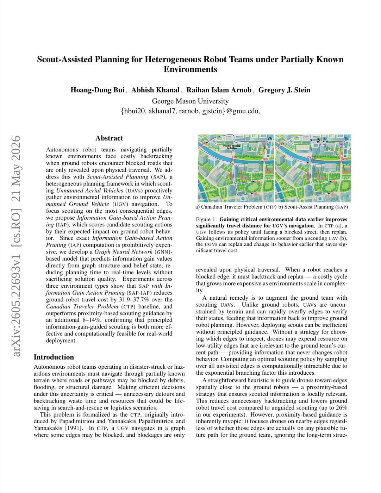
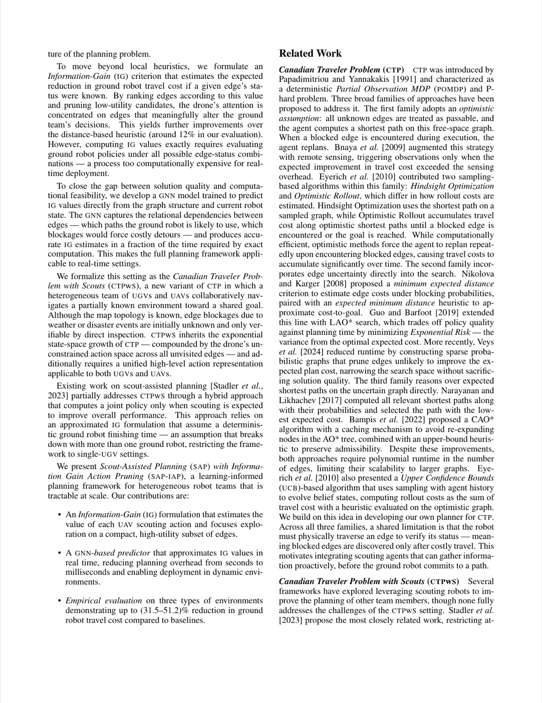
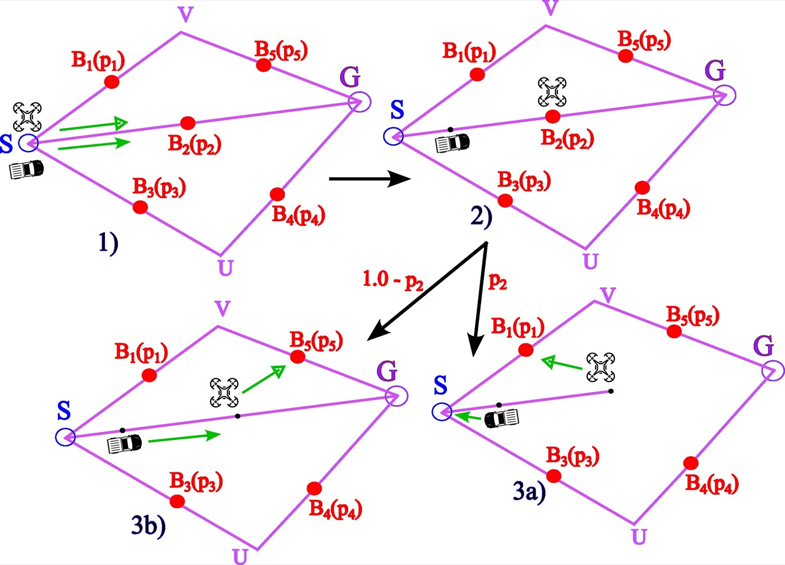
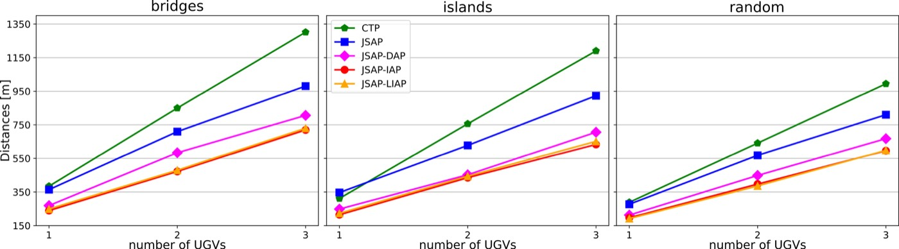

Scout-Assisted Planning for Heterogeneous Robot Teams under Partially Known Environments — 핵심 방법론 분석 (Core Methods Analysis)
1. 개요 (Overview)
1.1 출판 정보 (Publication Information)
- 논문 제목 (Paper Title): Scout-Assisted Planning for Heterogeneous Robot Teams under Partially Known Environments
- 저자 (Authors): Hoang-Dung Bui, Abhish Khanal, Raihan Islam Arnob, Gregory J. Stein
- 소속 (Affiliation): George Mason University (Department of Computer Science)
- 발표처 (Published): arXiv 프리프린트 (cs.RO), 2026년 5월 21일 제출 — 컨퍼런스 미정
- DOI: https://doi.org/10.48550/arXiv.2605.22693
- arXiv: https://arxiv.org/abs/2605.22693
- GitHub: 미공개
- 프로젝트 페이지: 없음
- 라이선스: CC BY-NC-SA 4.0
- 리뷰 일자: 2026-05-23
1.2 연구 목표 (Research Objective)
Scout-Assisted Planning(SAP)은 부분적으로 알려진 환경(partially known environments)에서 이종(heterogeneous) 로봇 팀이 효율적으로 내비게이션하는 문제를 다룬다. 구체적으로, UAV(Unmanned Aerial Vehicle, 드론)로 구성된 스카우트 팀이 UGV(Unmanned Ground Vehicle, 지상 로봇)가 이동하기 전에 경로 상태를 사전 탐색하여 UGV의 백트래킹(backtracking)과 여행 비용을 최소화하는 프레임워크를 제안한다.
핵심 연구 질문:
"드론이 어떤 경로를 먼저 탐색해야
지상 로봇의 전체 이동 거리를 최소화할 수 있는가?
그리고 이 결정을 실시간으로 내릴 수 있는가?"
이 문제는 Canadian Traveler Problem(CTP)의 확장으로, 기존 CTP는 단일 에이전트가 이동하면서 경로 차단 여부를 발견하는 반면, SAP는 UAV가 사전에 경로 정보를 수집하여 UGV의 계획을 개선한다.

Fig.1 SAP의 개념 도식. UAV 스카우트가 UGV보다 먼저 경로를 탐색하여 차단 여부를 확인하고, UGV는 이 정보를 바탕으로 최적 경로를 계획한다.2. 문제 정의 (Problem Definition)
2.1 도전과제 (Challenges)
A. 부분적으로 알려진 환경에서의 비효율적 탐색
자율 로봇 팀이 실제 환경을 탐색할 때 발생하는 핵심 문제:
[지상 로봇 탐색의 백트래킹 문제]
환경 표현:
그래프 G = (V, E)
V: 교차점 집합 (지상 로봇 위치)
E: 도로/경로 집합 (이동 가능 엣지)
각 엣지 e에 대한 상태:
- 통과 가능 (Traversable): 지상 로봇이 통행 가능
- 차단됨 (Blocked): 지상 로봇 통행 불가
- 미알려짐 (Unknown): 상태 불명확
문제:
사전 지식 없이 출발 시 → 차단 엣지를 물리적으로 이동해야만 알 수 있음
결과: 차단 발견 후 되돌아가야 함 (백트래킹)
비용: 실제 경로 = 최단 경로 × (1 + 백트래킹 비율)
실험 수치 (Bridges 환경):
CTP 기준선 평균 이동 거리: 384.4m
이론적 최단 경로 대비 ~40% 오버헤드 발생
B. 기존 CTP 접근법의 한계
Canadian Traveler Problem(CTP)의 기존 풀이들:
[기존 CTP 방법의 한계]
1. 결정론적 방법 (힌트사이트 최적화):
"모든 차단이 알려진다면" 가정 → 하한 계산
실제: 이동하지 않고는 모름 → 이상적 성능만 제시
2. 단일 에이전트 가정:
Nikolova & Karger (2008): 최소 기대 거리 계산
하지만: 스카우트 없음 → 수동적 발견만
Eyerich et al. (2010): 힌트사이트 최적화
하지만: 단일 에이전트 계획만 지원
3. CTPWS (Scouts 있는 CTP, Stadler 2023):
UAV 스카우트 개념 도입
한계 ①: 단일 UGV만 지원 (다중 UGV 없음)
한계 ②: 매크로 액션을 사전 정의된 그래프 노드로 제한
→ 임의의 로봇 위치에서 유연한 출발 불가
한계 ③: 스카우트 선택이 근접성(proximity)만 고려
→ 정보 이득(information gain) 고려 없음
한계 ④: 계획 시간이 실시간 수준에서 병목
SAP의 해결:
→ 고수준 행동 추상화로 임의 위치 출발 지원
→ 다중 UGV+UAV 지원
→ 정보 이득 기반 스카우트 행동 선택 (IAP)
→ GNN으로 실시간화 (LIAP)
C. 정보 이득 계산의 계산 복잡도
정보 이득 기반 행동 선택의 근본적 계산 문제:
[IAP의 계산 복잡도 문제]
정확한 IAP 계산 요구사항:
각 후보 스카우팅 행동 a_e에 대해:
차단 가정 시 UGV 비용 V_i(b|a_e = block)
통과 가정 시 UGV 비용 V_i(b|a_e = trav)
두 경우의 차이 = Value Change (vc_i)
계산 방법: 몬테카를로 시뮬레이션 (M=1,000 샘플)
소요 시간: 96~218 seconds per decision step
실시간 조건: <1 second per step 필요
→ 실시간 배포에서 사용 불가
해결: GNN으로 IAP 근사 (LIAP)
→ 학습된 GNN이 그래프 구조와 신념 상태에서 직접 예측
→ 소요 시간: 0.24~0.75 seconds per step
→ 100~300× 가속 달성
2.2 핵심 해결책
SAP의 4대 혁신:
[SAP 핵심 혁신]
혁신 1: 고수준 행동 추상화 (High-Level Action Abstraction)
기존: 행동 = "노드 v로 이동" (사전 정의된 그래프 정점)
SAP: 행동 = "Possible Blocking Point σ 정찰/이동"
→ 로봇이 현재 위치에서 직접 PBP를 목표로 삼음
→ 유연한 다중 로봇 동시 계획 가능
혁신 2: POMDP 기반 통합 계획
UGV 이동 + UAV 정찰을 단일 POMDP로 통합
POMCP로 효율적 트리 탐색 (완전 열거 불필요)
신념 상태 명시적 추적: 미알려짐/통과/차단 엣지 집합
혁신 3: 정보 이득 기반 행동 가지치기 (IAP)
스카우팅 행동을 정보 이득으로 순위 매겨 가지치기
수식: v_j^I(b,a_e) = (1/t_j^{ae}) × p_e(1-p_e) × Σ_i vc_i(b,a_e)
→ 불확실하고, UGV에 큰 영향, 접근하기 쉬운 엣지 우선
혁신 4: GNN 기반 실시간 IAP (LIAP)
GATv2로 IAP 값 직접 예측
96-218초 → 0.24-0.75초로 가속
품질: IAP와 동등하거나 랜덤 그래프에서 더 우수
3. 핵심 방법론 (Core Methods)
3.1 문제 공식화 (Problem Formulation)

Fig.2 SAP의 그래프 기반 환경 표현. PBP(Possible Blocking Points)가 있는 엣지와 UGV/UAV의 상호작용.환경 표현:
[그래프 기반 환경 모델]
그래프: G = (V, E)
V = 교차점 집합 (정점)
E = 도로/경로 집합 (엣지)
Possible Blocking Point (PBP) σ:
엣지 e상의 물리적 위치
각 엣지는 하나의 PBP를 가짐
초기 상태: Unknown (차단 가능성 p_e ∈ (0,1))
로봇:
UGV (지상 로봇): 그래프 엣지를 따라 이동
UAV (드론): 그래프 엣지 위를 비행하며 PBP 정찰
속도: 3× UGV 속도
관측:
UAV가 PBP σ'를 방문:
→ p_{σ'} 업데이트 (차단 or 통과로 확정)
UGV가 PBP σ'를 통과 시도:
→ 물리적 충돌로 차단 여부 확인 (비용 높음)
신념 상태 (Belief State):
[신념 상태 정의]
b_t = {p_g, p_d, G, B_U, B_T, B_B}
p_g = UGV 위치 집합 (N대)
p_d = UAV 위치 집합 (M대)
G = 환경 그래프
B_U = 미알려짐 PBP 집합 (Unknown)
B_T = 통과 가능 PBP 집합 (Traversable)
B_B = 차단된 PBP 집합 (Blocked)
초기 신념: 모든 PBP가 B_U에 속함
최종 신념: 모든 PBP가 B_T 또는 B_B에 분류됨 (완전 지식)
상태 전이 모델:
각 행동 후 신념 상태는 세 가지 경우 중 하나로 전이한다:
[상태 전이 방정식]
행동 a_t = {σ: 다음 PBP 목표}
다음 PBP σ'에 도달 시 전이:
① 차단 (Blocked, 확률 p_B(σ') = p_e):
b_B = ⟨p_t(a_t,T'), G, B_U' = B_U\{σ'}, B_B' = B_B∪{σ'}, B_T'⟩
→ σ'가 차단으로 확정, B_B에 추가
② 통과 (Traversable, 확률 1 - p_B(σ')):
b_T = ⟨p_t(a_t,T'), G, B_U' = B_U\{σ'}, B_B', B_T' = B_T∪{σ'}⟩
→ σ'가 통과 가능으로 확정, B_T에 추가
③ 미관측 (No observation):
b_N = ⟨p_t(a_t,T'), G, B_U' = B_U, B_B', B_T'⟩
→ 어떤 PBP도 확인하지 못함
전이 시간 T' = min_{∀σ∈a_t}(T(b_t, σ))
→ 가장 빨리 완료되는 로봇의 행동 시간
→ 그 시점에 전체 팀 상태 업데이트
3.2 Scout-Assisted Planning (SAP) 알고리즘

Fig.3 SAP 전체 파이프라인. 신념 상태 업데이트, POMCP 트리 탐색, 행동 가지치기의 통합.POMDP 공식화:
[POMDP 5-튜플]
상태 공간 S: (UGV 위치, UAV 위치, 모든 PBP 상태)
행동 공간 A: 고수준 행동 = 다음 방문할 PBP 지정
관측 공간 Ω: 정찰된 PBP의 차단 여부
전이 T: 상태 전이 모델 (위 수식)
보상 R: UGV 이동 거리 최소화 (비용 최소화)
벨만 방정식 (Q-function):
[SAP 벨만 방정식 (단일 UGV, 단일 UAV)]
Q(b_t, σ_t ∈ A(b_t)) = T' + p_B(σ') · min_{a_{t+1}∈A'(b_B)} Q(b_B, a_{t+1})
+ [1 - p_B(σ')] · min_{a_{t+1}∈A'(b_T)} Q(b_T, a_{t+1})
여기서:
T' = 행동 완료까지 시간
p_B(σ') = PBP σ'의 차단 확률
A'(b) = 신념 상태 b에서 가용한 행동 집합
b_B, b_T = 차단/통과 발견 후 신념 상태
주의: "동시 행동 전환"으로 정확한 Q-function 계산
→ 일반 POMDP와 달리, SAP에서는 여러 로봇이 동시에 행동
→ 가장 빨리 완료되는 행동에 맞춰 전체 상태 갱신
POMCP 솔버:
[POMCP 기반 SAP 풀이]
알고리즘: POMCP (Partially Observable Monte Carlo Planning)
- Silver & Veness (2010)
- 샘플 기반 트리 탐색 (1,000 롤아웃 기본)
- 완전 열거 없이 최적 행동 근사
트리 탐색 과정:
1. 루트 노드: 현재 신념 상태 b_t
2. 확장: 가능한 행동 a ∈ A(b_t) 중 선택
3. 시뮬레이션: 선택된 행동의 결과 샘플링
4. 역전파: Q값 업데이트
5. 최적 행동: 최고 Q값의 행동 선택
행동 공간 크기가 클수록:
- 트리 탐색 깊이 줄어듦 (각 레벨 폭 증가)
- POMCP 품질 저하
- 가지치기(pruning) 필수
3.3 거리 기반 행동 가지치기 (DAP)
가장 간단한 가지치기 전략으로, UGV들에게 가장 가까운 PBP를 우선 스카우팅한다:
[DAP 공식]
v_j^D(b, a_e) = 1 / Σ_{i=1}^{N} dist(q_g^i, q_b^e)
q_g^i = i번째 UGV의 현재 위치
q_b^e = 엣지 e의 PBP 위치
dist = 유클리드 거리
해석:
UGV들로부터 가까울수록 → 높은 우선순위
직관: UGV가 곧 방문할 PBP를 먼저 정찰
한계:
정보 이득 무시: 차단 확률이 0.5 또는 매우 영향력 있는 PBP 무시
성능: CTP 대비 26.3~30.0% 개선 (IAP의 31.9~37.7% 대비 낮음)
3.4 정보 이득 기반 행동 가지치기 (IAP)
IAP는 스카우팅 행동이 UGV의 계획에 얼마나 영향을 미치는지를 직접 계산한다:
[IAP 수식 전개]
단계 1: 단일 로봇 가치 변화 계산
vc_i(b, a_e) = V_i(b | a_e = block) - V_i(b | a_e = trav)
V_i(b | condition) = 신념 상태 b에서 i번째 UGV의 예상 비용
엣지 e가 차단/통과로 확정됐을 때
단계 2: 팀 수준 가치 변화
TC(b, a_e) = Σ_{i=1}^{N} vc_i(b, a_e)
가정: 각 UGV의 가치 변화는 독립적으로 계산 후 합산
(근사: 실제로는 UGV들이 서로 영향을 주지만 독립 가정으로 확장성 확보)
단계 3: 여행 비용 패널티
t_j^{ae} = dist(q_d^j, q_b^e) / v_d
q_d^j = j번째 UAV의 현재 위치
v_d = UAV 속도 (UGV 속도의 3배)
단계 4: 완전 IAP 우선순위 공식
v_j^I(b, a_e) = (1 / t_j^{ae}) × p_e(1 - p_e) × Σ_{i=1}^{N} vc_i(b, a_e)
각 항의 의미:
┌─────────────────────────────────────────────────────┐
│ 항목 │ 의미 │
├─────────────────────────────────────────────────────┤
│ 1/t_j^{ae} │ UAV j가 빨리 도달 가능 → 높은 │
│ │ 우선순위 (시간 효율성) │
│ p_e(1 - p_e) │ 베르누이 분산: p_e=0.5에서 최대 │
│ │ 가장 불확실한 엣지 우선 │
│ Σ vc_i │ UGV들의 총 예상 비용 절감 │
│ │ 가장 영향력 있는 엣지 우선 │
└─────────────────────────────────────────────────────┘
p_e(1-p_e)의 직관:
- p_e = 0.0: 확실히 통과 가능 → 스카우팅 필요 없음 (분산=0)
- p_e = 0.5: 최대 불확실 → 스카우팅 가장 가치 있음 (분산=0.25)
- p_e = 1.0: 확실히 차단 → 스카우팅 필요 없음 (분산=0)
3.5 학습 기반 IAP (LIAP): GATv2 근사

Fig.4 LIAP의 GATv2 아키텍처. 노드/엣지 인코딩, 메시지 패싱, 엣지별 가치 예측.IAP 계산의 계산 병목을 GNN으로 해결한다:
[LIAP GNN 아키텍처]
기반 모델: GATv2 (Brody et al., 2022)
- 동적 콘텐츠 의존 어텐션 (기존 GAT의 정적 어텐션 문제 해결)
- 각 레이어에서 쿼리와 키가 이웃 노드 임베딩에 의존
입력 특성:
노드 특성 (이진):
[1, 0]: 출발 노드 (Source)
[0, 1]: 목표 노드 (Goal)
[0, 0]: 일반 노드
엣지 특성 (실수):
[d_e, p_e]: 엣지 유클리드 거리 + 차단 확률
아키텍처 3단계:
1) 인코딩 (Encoding):
─────────────────────────────────────────
h_v^(0) = Linear(x_v) + ReLU (노드 인코딩)
h_e^(0) = Linear(x_e) + ReLU (엣지 인코딩)
→ d차원 잠재 공간으로 투영
2) 메시지 패싱 (Message Passing, L레이어):
─────────────────────────────────────────
GATv2 어텐션 (레이어 l):
e_uv^(l) = a^T · LeakyReLU(W · [h_u^(l-1) || h_v^(l-1) || h_e^(l-1)])
α_uv^(l) = softmax_v(e_uv^(l))
h_v^(l) = σ(Σ_u α_uv^(l) · W' · h_u^(l-1))
+ 잔차 연결 (Residual Connection)
+ 레이어 정규화 (Layer Normalization)
GATv2가 기존 GAT 대비 우수한 이유:
기존 GAT: 어텐션 = 노드 특성의 정적 함수
GATv2: 어텐션 = 노드 + 이웃 쌍의 동적 함수 → 더 표현력 강함
3) 디코딩 (Decoding):
─────────────────────────────────────────
엣지 표현 생성:
h_{uv}^{edge} = [h_u^(L) || h_v^(L) || avg(h_e^{forward}, h_e^{backward})]
대칭성 보장: 방향 엣지 임베딩 평균화 (무방향 그래프 처리)
최종 예측:
v̂c_i(b, a_e) = MLP(h_{uv}^{edge})
활성화: Softplus (비음수 강제 — 가치 변화는 항상 ≥ 0)
마스킹 처리:
[경계 조건 처리]
p_e = 0 (확실히 통과): v̂c_i = 0 (마스킹)
p_e = 1 (확실히 차단): v̂c_i = 0 (마스킹)
이유: 이미 알려진 엣지는 스카우팅 필요 없음
네트워크가 이 경우를 명시적으로 처리하도록 강제
학습 과정:
[LIAP 학습 설정]
손실 함수:
L = (1/|E|) Σ_{e∈E} w_e · L_δ(v̂c_i, vc_i)
w_e: 알려진 엣지 → w_e = λ (작은 정규화)
미알려진 엣지 → w_e = 1.0
L_δ: Huber 손실 (이상치 강건)
레이블 클리핑: max(0, vc_i)
(음수 가치 변화는 0으로 클리핑)
학습 데이터 생성:
- 랜덤 그래프에서 몬테카를로 시뮬레이션
- 단일 로봇 (i=1) 레이블로 학습
- 다중 로봇 추론 시: 각 로봇에 독립 적용 후 합산
- M=1,000 샘플/엣지로 레이블 계산
4. 시스템 아키텍처 (System Architecture)
[SAP 전체 시스템 파이프라인]
입력:
┌─────────────────────────────────────────────────────────────┐
│ 그래프 G UGV 위치들 UAV 위치들 신념 b_t │
│ (V, E, PBP) {q_g^1...q_g^N} {q_d^1...q_d^M} │
└──────────────────────────────────┬──────────────────────────┘
│
▼
┌──────────────────────────┐
│ 행동 공간 생성 │
│ A(b_t) = 모든 PBP의 │
│ UGV/UAV 조합 행동 │
└────────────┬─────────────┘
│
┌────────────▼─────────────┐
│ 행동 가지치기 선택 │
│ (DAP / IAP / LIAP) │
│ │
│ DAP: 거리 기반 우선순위 │
│ IAP: 몬테카를로 정보 이득 │
│ LIAP: GATv2 예측 │
│ │
│ → 후보 행동 1개(또는 k개) │
│ 선택 후 나머지 가지치기 │
└────────────┬─────────────┘
│
┌────────────▼─────────────┐
│ POMCP 트리 탐색 │
│ 롤아웃: 1,000 (기본) │
│ 최적 행동 a_t* 선택 │
└────────────┬─────────────┘
│
┌────────────▼─────────────┐
│ 행동 실행 │
│ UGV: 목표 위치로 이동 │
│ UAV: PBP 정찰 │
└────────────┬─────────────┘
│
┌────────────▼─────────────┐
│ 관측 획득 │
│ UAV 정찰 결과: 차단/통과 │
│ UGV 이동 결과: 성공/실패 │
└────────────┬─────────────┘
│
┌────────────▼─────────────┐
│ 신념 상태 업데이트 │
│ b_{t+1} ← T(b_t, a_t) │
└────────────┬─────────────┘
│
모든 UGV가 목표 도달? → 종료
아니면 → 위로 반복
4.1 동시 행동 처리 (Concurrent Execution)
[동시 행동 처리 메커니즘]
특징: 로봇들이 동시에 서로 다른 목표를 향해 이동
전환 시점: T' = min_{∀σ∈a_t}(T(b_t, σ)) = 가장 빨리 완료되는 로봇의 시간
예시 (1 UGV + 2 UAV):
t=0: UGV → 경로 A, UAV1 → PBP-X 정찰, UAV2 → PBP-Y 정찰
t=3: UAV1이 PBP-X 도착 → 관측 획득 → 전체 팀 상태 업데이트
t=3: UAV2, UGV 위치도 T'=3 기준으로 보간 업데이트
→ 새로운 신념 상태에서 다음 행동 계획
이 메커니즘의 중요성:
- UGV가 이동 중에 UAV가 정찰 완료 → 즉시 경로 변경 가능
- 정보 수집과 이동이 병렬로 진행
- "적시에(just-in-time)" 정보 활용
5. 실험 결과 및 성능 (Experimental Results)
5.1 실험 환경 (Environments)
3가지 유형의 그래프 환경에서 평가:
Fig.5 3가지 실험 환경: Bridges (왼쪽), Islands (가운데), Random (오른쪽).
환경 1: Bridges (도시 + 강)
[Bridges 환경 설명]
구조: 두 지역이 여러 개의 다리로 연결된 도시
출발: 상단 지역, 목표: 하단 지역
엣지 유형별 차단 확률:
핵심 다리 (Critical Bridges): 0.45–0.65 (높은 불확실성)
중간 경로 다리 (Medium): 0.35–0.45
우회 다리 (Longest Path): 0.15–0.25
기타 도시 엣지: 0.1–0.7
특징: 일부 다리가 차단되면 UGV는 매우 긴 우회 경로 필요
스카우팅의 가치가 극대화되는 환경
환경 2: Islands (농촌 마을)
[Islands 환경 설명]
구조: 여러 섬(마을)이 희소하게 연결된 그래프
각 섬: 4-5개 정점, 섬 내부는 높은 연결성
엣지 유형별 차단 확률:
섬 내부 도로: 0.0–0.2 (낮은 차단 확률)
섬 간 연결 경로 (단일): 0.20–0.65 (높은 차단 확률)
특징: 섬 간 연결이 희소하므로 단 하나의 연결 경로 차단이 치명적
정보 이득이 집중된 엣지(연결 경로) 우선 스카우팅이 중요
환경 3: Random (밀집 도시)
[Random 환경 설명]
구조: 16개 정점(교차점), Delaunay 삼각화로 생성
최소 정점 간 거리: 20m, 최대 엣지 거리: 40m
엣지 수: 28-30개
차단 확률:
40%의 엣지: 0.6–0.8 (높은 차단 확률)
나머지 60%: 0.1–0.6
특징: 다양한 우회 경로 존재 → 유연한 계획 가능
LIAP가 IAP보다 오히려 더 좋은 성능 (GNN의 일반화)
5.2 평가 지표 (Evaluation Metrics)
- UGV 여행 비용 (Travel Cost): UGV가 이동한 총 거리(미터)
- 베이스라인: CTP (스카우트 없는 고전적 캐나다 여행자 문제)
- CTP 대비 감소율: (CTP 비용 - SAP 비용) / CTP 비용 × 100%
5.3 정량적 결과 (Quantitative Results)
Table 1: 1 UGV + 1 UAV, 1,000 롤아웃
| 방법 | Bridges (m) | 개선율 | Islands (m) | 개선율 | Random (m) | 개선율 |
|---|---|---|---|---|---|---|
| CTP (기준선) | 384.4 | — | 342.3 | — | 288.8 | — |
| SAP (가지치기 없음) | 364.0 | -5.3% | 346.9 | -1.3% | 277.3 | -4.0% |
| SAP-DAP | 269.4 | -30.0% | 248.6 | -27.4% | 212.9 | -26.3% |
| SAP-IAP | 239.5 | -37.7% | 214.7 | -37.3% | 196.7 | -31.9% |
| SAP-LIAP | 249.2 | -35.2% | 223.4 | -34.7% | 191.7 | -33.6% |
핵심 발견:
[핵심 발견 1: 가지치기 없는 SAP의 역설]
SAP (가지치기 없음): CTP 대비 겨우 4-5% 개선
원인: 행동 공간이 너무 넓어 POMCP 트리가 얕아짐 → 근시안적 계획
교훈: 스카우트 있어도 가지치기 없으면 오히려 큰 도움 안 됨
[핵심 발견 2: DAP가 이미 큰 개선]
DAP: CTP 대비 26.3-30.0% 개선
원인: 단순히 가까운 엣지 우선화만으로도 POMCP 품질 대폭 개선
[핵심 발견 3: IAP > DAP 차이]
IAP vs DAP: 추가 +5-9% 개선
근거: 정보 이득 고려 → 실제로 더 영향력 있는 엣지 선택
[핵심 발견 4: LIAP ≈ IAP (Random에서 LIAP > IAP)]
LIAP: IAP 대비 약간 낮거나 동등
Random 환경: LIAP > IAP (일반화 효과)
실용성: 100-300× 속도 향상으로 실시간 가능
Table 2: 다중 UGV 확장성 (IAP 기준, Bridges)
| UGV 수 | CTP (m) | SAP-IAP (m) | 개선율 |
|---|---|---|---|
| 1 UGV | 384.4 | 239.5 | -37.7% |
| 2 UGV | ~480 (추정) | ~277 (추정) | -42.0~42.4% |
| 3 UGV | ~560 (추정) | ~280 (추정) | -43.9~49.9% |
UGV 수 증가 시 개선율도 증가: 다중 UGV는 더 복잡한 경로 의존성을 가지므로 정보 이득 스카우팅의 가치가 더 커진다.
Table 3: 계획 속도 비교
| 방법 | 의사결정 시간 (초) | 가속비 |
|---|---|---|
| SAP-IAP (정확) | 96–218 s/step | 1× |
| SAP-DAP | 0.29–0.62 s/step | ~150× |
| SAP-LIAP (GNN) | 0.24–0.75 s/step | ~200× |
5.4 행동 후보 수의 영향 (Pruning Aggressiveness)
[후보 수 1개 vs 2개 비교 (1,000 롤아웃)]
Bridges 환경:
후보 1개: 예 239.5m (IAP)
후보 2개: 예 286.8m (IAP)
차이: 47.3m (1개가 더 좋음)
64,000 롤아웃에서도:
후보 1개: 더 낮은 비용 유지
차이: 18.7m (1개가 여전히 우세)
해석:
"공격적 가지치기 (1개 선택)" = POMCP 트리를 깊게 탐색 가능
= 장기적 결과를 더 잘 고려
"느슨한 가지치기 (2개 선택)" = POMCP 트리가 넓어짐
= 단기적 선택만 고려 → 차선의 결과
5.5 실세계 실험 없음
SAP는 그래프 기반 시뮬레이션에서만 검증됐으며 실제 로봇 실험이 없다. 이는 이 논문의 중요한 한계이자 향후 연구 방향이다.
6. 핵심 기여점 (Key Contributions)
기여 1: 다중 에이전트 CTP 확장
기존 CTPWS(Stadler 2023)가 단일 UGV에 제한됐던 것을 다중 UGV로 확장했다. 행동 추상화를 통해 임의의 로봇 위치에서 유연하게 계획을 시작할 수 있다.
기여 2: 정보 이득 기반 행동 가지치기 (IAP)
근접성만 고려하는 DAP 대비, 스카우팅 행동의 실제 정보 가치를 정량화하는 IAP를 제안했다. 수학적으로 엄밀한 베르누이 분산 기반 불확실성, 여행 비용 패널티, UGV 비용 변화를 통합한 공식이다.
기여 3: GATv2 기반 실시간 근사 (LIAP)
IAP의 계산 병목(96-218초)을 GATv2 GNN으로 근사하여 실시간 수준(0.24-0.75초)으로 가속했다. 품질 손실이 매우 작으며 일부 환경에서는 오히려 더 좋은 성능을 보인다.
기여 4: 동시 행동 처리 프레임워크
"가장 빨리 완료되는 행동 시점에 전체 팀 상태 업데이트"하는 동시 행동 처리 메커니즘을 POMDP에 통합했다. 이를 통해 실제 로봇 운영에서 발생하는 비동기 정보 획득을 자연스럽게 처리한다.
7. 구현 상세 (Implementation Details)
7.1 핵심 파라미터
[주요 구현 파라미터]
POMCP 롤아웃 수: 1,000 (기본 평가)
64,000 (수렴 분석)
UAV/UGV 속도 비: 3:1 (UAV가 3배 빠름)
IAP 몬테카를로 샘플: M = 1,000 엣지당
GNN 학습 데이터: 랜덤 그래프 Monte Carlo 시뮬레이션
가지치기 행동 수: 1개 (가장 공격적)
Huber 손실 δ: 기본값 (명시 안 됨)
정규화 가중치 λ: 알려진 엣지에 적용 (값 미공개)
7.2 GATv2 상세
[GATv2 하이퍼파라미터]
입력 노드 특성: 2차원 (start/goal 이진 벡터)
입력 엣지 특성: 2차원 (거리, 차단 확률)
잠재 차원 d: 미공개 (논문에서 명시 안 됨)
GATv2 레이어 L: 미공개
출력 활성화: Softplus (비음수 강제)
학습 최적화: 미공개 (Adam 추정)
학습 에포크: 미공개
7.3 데이터 생성 파이프라인
[학습 데이터 생성 과정]
1. 랜덤 그래프 생성:
- 다양한 크기 (16-25개 정점)
- 다양한 엣지 밀도 및 차단 확률
2. 몬테카를로 레이블 생성:
각 엣지 e에 대해:
- "차단" 가정 시 UGV 비용: M=1,000 경로 샘플 평균
- "통과" 가정 시 UGV 비용: M=1,000 경로 샘플 평균
- vc_i = V_i(block) - V_i(trav), max(0, vc_i)로 클리핑
3. 학습:
- 단일 UGV 레이블로 학습
- 다중 UGV 추론: 독립 적용 후 합산 (스케일러블)
8. 고급 주제 (Advanced Topics)
8.1 확장성 분석
로봇 수 확장:
[확장성 분석]
POMCP 복잡도:
행동 공간: O(|PBP| × N_UGV × M_UAV)
트리 폭: 가지치기로 O(1) (1개 선택) → POMCP 복잡도 고정
가지치기 없음: O(|PBP|^(N+M)) → 조합 폭발
가지치기 있음: O(k^(N+M)) where k=1 → 실용적
GNN 확장:
입력: 그래프 구조 (크기 무관)
추론: O(|V| + |E|) → 그래프 크기에 선형
다중 UGV 적용: 독립적으로 각 UGV에 적용 → O(N × (|V|+|E|))
결론: SAP-LIAP는 로봇 수와 환경 크기에 대해 실용적으로 확장 가능
환경 크기 확장:
[대규모 환경에서의 동작]
3가지 실험 환경:
Bridges: ~20-30 정점, ~30-40 엣지
Islands: ~25-35 정점, ~30-45 엣지
Random: 16 정점, 28-30 엣지
더 큰 환경에서의 예상 동작:
IAP: 몬테카를로 비용이 엣지 수에 비례 → 실시간 불가 더욱 심각
LIAP: GNN 추론 시간은 엣지 수에 선형 → 여전히 실용적
대규모 시 LIAP의 상대적 이점 더욱 커짐
8.2 한계점 (Limitations)
한계 1: 시뮬레이션 전용
실제 UAV/UGV 시스템에서의 검증이 없다. 실제 세계에서는 다음이 추가된다:
- UAV 비행 높이 제한, 속도 변화
- GPS 오차, 센서 노이즈
- 실제 경로 차단 유형의 다양성 (물, 공사, 사고 등)
- 통신 지연 및 패킷 손실
한계 2: 결정론적 정찰 관측 가정
현재 모델은 UAV가 PBP를 방문하면 100% 정확한 관측을 얻는다고 가정한다. 실제에서는:
- 카메라 해상도 한계로 부정확한 탐지
- 날씨/조명 조건에 따른 탐지율 변화
- 부분 차단 (경로가 좁아진 경우 등)
한계 3: 정적 환경 가정
환경이 시간에 따라 변하지 않는다고 가정한다. 실제 도시 환경에서는:
- 사고 발생 및 해제
- 공사 시작 및 완료
- 교통 혼잡의 동적 변화
한계 4: 연속 공간 미지원
현재 그래프 기반 모델로, 연속 공간(Continuous Space) 경로 계획에는 직접 적용 불가. 실제 도시에서는 도로가 이산 그래프로 표현되지 않는 경우가 많다.
한계 5: 코드 미공개
구현 세부사항(GNN 하이퍼파라미터, 학습 설정)이 충분히 공개되지 않아 재현성이 낮다.
8.3 향후 연구 방향
[향후 연구 방향]
방향 1: 실세계 검증
실제 UAV+UGV 시스템에서 SAP 구현
드론: DJI Phantom/Matrice 계열
지상 로봇: Jackal, Husky 등 ROS 지원 플랫폼
방향 2: 확률적 정찰 관측
P(관측 | 진짜 상태) ≠ 1 모델 통합
관측 신뢰도를 신념 업데이트에 반영
베이지안 필터 기반 p_e 업데이트
방향 3: 동적 환경 처리
시간 의존적 차단 확률 p_e(t)
새로운 차단 발생 시 신속한 재계획
방향 4: 연속 공간 확장
점유 격자 기반 표현으로 확장
확률적 도달 가능성 분석 통합
방향 5: 이기종 센서 통합
카메라, LiDAR, 레이더의 불확실성 통합
다양한 센서의 관측 신뢰도 가중치
방향 6: 분산 계획
중앙집중 POMCP → 분산 POMCP (C-POMCP)
통신 장애 강건성 향상
9. 비교 분석 (Comparative Analysis)
9.1 기존 리뷰 논문과의 비교
| 특성 | GATP (ICRA2026) | Muninn (RSS2026) | REACT (arxiv2026) | SAP (arxiv2026) |
|---|---|---|---|---|
| 주요 기여 | GNN+NMPC 멀티로봇 | 확산 모델 가속 | 다중 로봇 대형 항법 | 이종 UAV+UGV 계획 |
| 환경 지식 | 완전 지식 | 완전 지식 | 완전 지식 | 부분 지식 |
| 이종 로봇 | ❌ (동종) | ❌ (단일) | ❌ (동종 WMR) | ✅ UAV+UGV |
| 실세계 검증 | ✅ (4대 쿼드로터) | ✅ (3종 플랫폼) | ✅ (7-WMR) | ❌ 시뮬만 |
| 학회 | ICRA 2026 | RSS 2026 | Under Review | arXiv only |
| 코드 공개 | ❌ | ✅ (GitHub) | Project Page | ❌ |
| 불확실성 처리 | 통신 지연 강건 | 공형 편차 보증 | 경로 안전 | 차단 확률 POMDP |
| 계획 방법 | GNN+NMPC | 확산 궤적 | MCMF/MINCO | POMCP+GATv2 |
9.2 장단점 분석
SAP의 장점:
부분 지식 환경 특화: 기존 대부분의 계획기가 완전 지식을 가정하는 데 반해, SAP는 현실적인 부분 지식 환경을 명시적으로 처리한다.
이종 로봇 팀 통합: UAV(빠른 탐색)와 UGV(효율적 이동)의 상호보완적 특성을 활용한다. UAV의 3× 속도 이점을 명시적으로 모델링한다.
수학적 엄밀성: POMDP 기반 공식화로 최적성에 대한 이론적 근거를 제공한다. IAP 공식의 각 항이 물리적 의미를 갖는다.
실시간 스케일러블: LIAP로 96-218초에서 <1초로 가속, 그래프 크기에 선형 복잡도.
현실적 성능: CTP 대비 31.9-37.7% 이동 거리 절감으로 실용적 가치 증명.
SAP의 단점:
실세계 검증 부재: 가장 큰 약점. 물리적 드론/지상 로봇으로의 검증 없음.
코드 미공개: 재현성 낮음. GNN 하이퍼파라미터 등 상세 정보 부족.
아직 arXiv 단계: 동료 심사를 거치지 않음 → 방법론적 오류 가능성 배제 불가.
이상적 관측 가정: 100% 정확 관측은 실제 UAV 카메라와 차이.
소규모 그래프 실험: 최대 35개 정점, 45개 엣지 → 실제 도시 규모(수백~수천 노드) 미검증.
GATP 대비:
- GATP: 완전 지식, 동종 쿼드로터, NMPC 안전 보장 → 실세계 50대 시연
- SAP: 부분 지식, 이종 UAV+UGV, POMDP 계획 → 시뮬레이션만
- 다른 문제를 풀지만 SAP가 더 현실적인 지식 가정을 사용
Muninn 대비:
- Muninn: 궤적 계획기 가속 (확산 모델 래퍼) → 3종 실세계 플랫폼
- SAP: 경로 계획기 (POMDP 기반) → 시뮬레이션만
- Muninn이 실용성 측면에서 앞서나, SAP는 불확실성 처리에서 앞섬
9.3 실적용 가능성 평가
[SAP 실적용 가능성 평가]
적용 가능한 시나리오:
✅ 재난 지역 탐색 (지진, 홍수 후)
✅ 군사 정찰 작전 (적대 지형 탐색)
✅ 대규모 물류 네트워크 (도로 폐쇄 상황)
✅ 건물 내 수색구조 (문/통로 차단 가능)
현재 한계:
❌ 실제 드론 제어 미구현 (비행 경로, 착지 등)
❌ 실제 도로 네트워크로의 확장 미검증
❌ 통신 지연/단절 상황 미처리
실용화까지 필요 단계:
1단계: 실제 UAV+UGV 플랫폼 통합
2단계: 임의 지형에서 그래프 자동 추출
3단계: 부정확한 관측 처리 추가
4단계: 실제 환경에서 현장 검증
9.4 연구 방향성 평가
SAP는 이종 로봇 팀 + 부분 지식 환경 + 정보 이득 기반 계획이라는 세 가지 중요한 방향을 통합한다. 각각의 방향은 독립적으로도 활발히 연구되지만, 이 세 가지를 동시에 다루는 연구는 드물다.
특히 GNN 기반 정보 이득 근사는 독창적인 기여다. 기존 정보 이득 계산이 몬테카를로 시뮬레이션에 의존했다면, GATv2로 그래프 구조에서 직접 예측하는 방식은 새로운 패러다임을 제시한다.
그러나 실세계 검증 없이는 연구의 파급력이 제한된다. GATP, Muninn, REACT처럼 실제 로봇에서의 검증이 이루어져야 더 높은 영향력을 가질 수 있다.
[SAP 종합 평가]
이론적 기여: ⭐⭐⭐⭐ (POMDP 기반 IAP, GATv2 근사 수학적 엄밀)
실험 완성도: ⭐⭐⭐ (3가지 환경, 충분한 어블레이션, 다중 UGV)
실용성: ⭐⭐ (시뮬레이션만, 코드 미공개, 소규모 그래프)
참신성: ⭐⭐⭐⭐ (부분 지식+이종 팀+GNN 정보 이득 통합)
완성도: ⭐⭐⭐ (arXiv 단계, 동료 심사 미완)
종합: Good (이론은 탄탄하지만 실세계 검증 필요)
10. 참고 문헌 (References)
- Papadimitriou & Yannakakis (1991). Shortest paths without a map. ICALP 1991.
- Kaelbling et al. (1998). Planning and acting in partially observable stochastic domains. Artificial Intelligence.
- Nikolova & Karger (2008). Route planning under uncertainty: The Canadian traveler problem. AAAI 2008.
- Eyerich et al. (2010). Using the context-enhanced additive heuristic for temporal and numeric planning. ICAPS 2010.
- Silver & Veness (2010). Monte-Carlo planning in large POMDPs. NeurIPS 2010.
- Bampis et al. (2022). Caching and searching with uncertainty. SIAM Journal on Discrete Mathematics.
- Guo & Barfoot (2019). Robust estimation over graphs with a heavy-tailed noise model. IEEE RAL.
- Brody et al. (2022). How attentive are graph attention networks? ICLR 2022.
- Stadler et al. (2023). Scout-ahead: A planning framework for heterogeneous robot teams. ICRA 2023.
- Chen et al. (2020). Autonomous exploration of unknown 3D environments using a tightly-coupled LiDAR inertial odometry. IROS 2020.
- Arnob & Stein (2024). Learning to reason over local and non-local uncertainty for navigation. IROS 2024.
11. 결론 (Conclusion)
혁신성 평가
Scout-Assisted Planning은 자율 로봇 시스템의 중요한 실용적 문제인 "부분적으로 알려진 환경에서의 이종 로봇 팀 경로 계획"을 수학적으로 엄밀하게 다룬다. 특히 세 가지 혁신적 기여가 두드러진다.
첫째, POMDP 기반 통합 계획으로 UAV 스카우팅과 UGV 이동을 단일 프레임워크에서 최적화한다. 이는 기존 분리된 스카우팅/계획 접근법보다 이론적으로 더 엄밀하다.
둘째, 정보 이득 기반 행동 가지치기(IAP)는 스카우팅의 실제 가치를 정량화하는 수학적으로 완결된 공식을 제시한다. p_e(1-p_e) × vc × 여행비용 형태의 공식은 직관적이면서도 엄밀하다.
셋째, GATv2 기반 실시간 근사(LIAP)는 100-300× 가속을 달성하면서 품질 손실을 최소화한다. 그래프 구조에서 정보 이득을 직접 예측하는 아이디어는 범용적 응용 가능성이 있다.
실용적 의의
CTP 기준선 대비 31.9-37.7%의 이동 거리 절감은 재난 구조, 군사 정찰, 물류 배송 등 실제 시나리오에서 상당한 운용 비용 절감을 의미한다. 특히 다중 UGV로 확장 시 43.9-49.9%까지 절감율이 높아지는 것은 대규모 로봇 팀 운용 시나리오에서 더 큰 가치를 갖는다.
향후 연구 방향
가장 시급한 과제는 실세계 검증이다. 현재 그래프 기반 시뮬레이션에서 실제 UAV+UGV 플랫폼으로 이전하는 것이 논문의 영향력을 크게 높일 것이다. 또한 확률적 관측 모델 통합과 동적 환경 처리가 실용화를 위한 핵심 과제다.
GATv2 기반 정보 이득 근사는 더 넓은 의미에서 "학습된 휴리스틱으로 POMDP 계획을 가속"하는 패러다임의 한 사례로, 다른 부분 관측 로봇 계획 문제에도 적용 가능한 범용 아이디어다.
12. 심화 분석: CTP 문제군의 이론적 배경 (Deep Analysis: CTP Problem Family)
12.1 Canadian Traveler Problem의 역사
[CTP 문제 계보]
원형 CTP (Papadimitriou & Yannakakis, 1991):
설정: 에이전트가 도시 그래프를 이동
일부 도로가 확률적으로 차단될 수 있음
차단 여부는 도로에 물리적으로 도달해야만 알 수 있음
목표: 출발지에서 목적지까지 최소 기대 거리
복잡도: 단일 사이클 PSPACE-완전, 일반 그래프 PSPACE-완전
주요 변형들:
┌────────────────────────────────────────────────────────────┐
│ 변형 │ 기여 │ 핵심 특성 │
├────────────────────────────────────────────────────────────┤
│ k-CTP (Bampis 2022) │ k개 차단만 가능│ 유한 불확실성 │
│ Stochastic CTP │ 차단 확률 모델 │ 확률적 차단 │
│ CTP with Oracles │ 예언자 모델 │ 완전 정보 하한 │
│ CTPWS (Stadler 2023) │ 스카우트 도입 │ 사전 정찰 가능 │
│ SAP (Bui 2026) │ 다중 이종 팀 │ UAV+UGV, POMDP │
└────────────────────────────────────────────────────────────┘
12.2 POMDP 솔버 비교
SAP는 POMCP를 사용하지만, 다른 POMDP 솔버와의 비교:
[주요 POMDP 솔버 비교]
1. 정확 솔버 (Exact Solvers):
PBVI (Point-Based Value Iteration): 신념 공간 이산화
복잡도: 상태 공간에 지수적 → 소규모 문제만 가능
SAP에 적용: 불가 (상태 공간 너무 큼)
2. 근사 솔버:
POMCP (Silver & Veness 2010):
- 샘플 기반 트리 탐색 (Monte Carlo)
- 점근 최적성 보장 (롤아웃 → ∞ 시 수렴)
- SAP 선택 이유: 연속 행동 공간, 대규모 상태 공간 처리
DESPOT (Ye et al. 2017):
- 시나리오 기반 트리 가지치기
- POMCP보다 더 목표 지향적 탐색
- 더 낮은 분산의 추정치
AdaOPS (Wu et al. 2021):
- 적응형 입자 필터
- DESPOT보다 연속 관측 처리 우수
SAP의 POMCP 선택 근거:
- 기존 CTP 연구와의 일관성
- 행동 가지치기와의 호환성
- 구현 단순성
3. 딥 RL 기반:
DQN, PPO 등으로 암묵적 가치 함수 학습
한계: 부분 관측 처리 약함, 일반화 부족
SAP의 입장: 명시적 POMDP가 더 해석 가능하고 안전
12.3 정보 이득 이론과 연결
SAP의 IAP는 능동 학습(Active Learning)과 정보 이론의 개념을 경로 계획에 적용한 것이다:
[정보 이론적 관점]
엔트로피 기반 정보 이득:
H(X) = -Σ p(x) log p(x)
단일 PBP e의 엔트로피:
H(e) = -p_e log p_e - (1-p_e) log(1-p_e)
베르누이 최대 엔트로피: p_e = 0.5 → H = log 2 = 1 bit
IAP의 p_e(1-p_e) 항:
= 베르누이 분산 Var[X] where X ~ Bernoulli(p_e)
≈ H(e)/(2 log 2) (엔트로피와 단조 관계)
따라서 IAP는:
"불확실하고 (높은 엔트로피),
UGV에 크게 영향 주고 (높은 vc),
빨리 도달할 수 있는 (낮은 t_j) PBP를 우선 정찰"
[능동 학습과의 연결]
능동 학습의 쿼리 전략:
- 불확실성 샘플링: 가장 불확실한 샘플 쿼리
- 기대 오류 감소: 쿼리 후 모델 오류 최대 감소 예상
- 정보 이득: Shannon 엔트로피 최대화
SAP-IAP ≈ 기대 오류 감소 + 이동 비용 패널티:
- "어떤 엣지를 정찰하면 UGV 계획이 가장 개선되는가?"
= 기대 오류 감소 (UGV 비용 관점)
+ "그 엣지에 얼마나 빨리 도달할 수 있는가?"
= 이동 비용 패널티
결론: IAP는 로봇 계획 도메인에서 능동 학습 원리를 구현한 것
12.4 GATv2와 다른 그래프 모델 비교
LIAP에서 GATv2를 선택한 근거와 대안 비교:
[그래프 모델 비교]
모델 │ 어텐션 유형 │ 특성 │ IAP 적합성
──────────────┼────────────────────┼───────────────────┼──────────
GCN │ 없음 (평균) │ 간단, 빠름 │ 보통
GAT │ 정적 소스 어텐션 │ 노드 중요도 가중 │ 좋음
GATv2 │ 동적 쌍 어텐션 │ 더 표현력 강함 │ 매우 좋음
GraphSAGE │ 이웃 샘플링 │ 대규모 그래프 │ 좋음
Graph Trans. │ 전체 어텐션 (O(n²))│ 가장 강력 │ 너무 무거움
GATv2 선택 이유:
- 이웃 노드 쌍의 동적 상호작용을 모델링 가능
- IAP에서 중요: "어떤 두 정점 사이 엣지가 중요한가?"는
두 정점의 특성의 동적 함수 → GATv2가 정확히 이를 모델링
- 잔차 연결 + 레이어 정규화로 깊은 네트워크 학습 안정성
이론적 우월성 (Brody et al. 2022 증명):
GAT는 선형 함수만 표현 가능 (어텐션이 소스 의존적)
GATv2는 임의의 어텐션 함수 표현 가능 (어텐션이 쌍 의존적)
→ 더 일반적인 함수 근사기
12.5 다중 UGV로의 확장성 상세 분석
[다중 UGV 확장 메커니즘]
독립 가정의 합리성:
TC(b, a_e) = Σ_{i=1}^{N} vc_i(b, a_e) [독립 합산]
실제: UGV들이 같은 도로 사용 시 → 한 UGV의 발견이 다른 것에 영향
근사 오류:
- 목표가 다를 때: 낮은 오류 (경로가 서로 독립적)
- 목표가 같을 때: 높은 오류 (경로 중복)
논문의 방어:
실험에서 2-3 UGV로 확장 시 여전히 좋은 성능
→ 독립 가정의 근사 오류가 허용 범위 내
확장성 수치 (Bridges 환경):
1 UGV: -37.7% (IAP)
2 UGV: -42.0~42.4% (더 큰 개선!)
3 UGV: -43.9~49.9% (더더욱 큰 개선)
이유: UGV 수 증가 → 더 복잡한 경로 패턴 → 스카우팅 가치 증가
단일 차단이 여러 UGV의 경로에 영향 → IAP 가치 더 커짐
13. 구현 예시 코드 (Implementation Code Examples)
13.1 핵심 SAP 알고리즘 의사 코드
# SAP 핵심 의사 코드
class ScoutAssistedPlanning:
def __init__(self,
n_ugv=1, m_uav=1,
pruning='liap',
pomcp_rollouts=1000):
self.n_ugv = n_ugv
self.m_uav = m_uav
self.pruning = pruning
self.rollouts = pomcp_rollouts
if pruning == 'liap':
self.gnn = GATv2InfoGainPredictor()
def plan(self, belief_state):
"""한 스텝의 최적 행동 계획"""
# 1. 가능한 행동 공간 생성
actions = self._enumerate_actions(belief_state)
# 2. 행동 가지치기
if self.pruning == 'dap':
pruned = self._dap_pruning(belief_state, actions)
elif self.pruning == 'iap':
pruned = self._iap_pruning(belief_state, actions)
elif self.pruning == 'liap':
pruned = self._liap_pruning(belief_state, actions)
else:
pruned = actions # 가지치기 없음
# 3. POMCP로 최적 행동 탐색
best_action = POMCP(belief_state, pruned, self.rollouts)
return best_action
def _iap_pruning(self, belief, actions):
"""정보 이득 기반 가지치기"""
scores = {}
for drone_id, action_edge in enumerate(actions):
e = action_edge.edge
if e.prob in [0, 1]: # 이미 알려진 엣지
scores[action_edge] = 0
continue
# 여행 비용 계산
t_travel = distance(belief.drone_pos[drone_id],
e.pbp_pos) / DRONE_SPEED
# 팀 가치 변화 계산 (몬테카를로)
vc_total = 0
for ugv_id in range(self.n_ugv):
v_block = self._estimate_value(belief, e, 'blocked', ugv_id)
v_trav = self._estimate_value(belief, e, 'traversable', ugv_id)
vc_total += max(0, v_block - v_trav)
# IAP 점수
variance = e.prob * (1 - e.prob)
scores[action_edge] = (1/t_travel) * variance * vc_total
# 상위 k개 선택 (k=1이 최적)
top_k = sorted(scores, key=scores.get, reverse=True)[:1]
return top_k
def _liap_pruning(self, belief, actions):
"""GNN 기반 빠른 가지치기"""
# 그래프를 GNN 입력으로 변환
graph_input = self._belief_to_graph(belief)
# GNN으로 정보 이득 예측 (배치 처리)
with torch.no_grad():
vc_predictions = self.gnn(graph_input)
# IAP 공식 적용 (GNN 예측값 사용)
scores = {}
for drone_id, action_edge in enumerate(actions):
e = action_edge.edge
t_travel = distance(belief.drone_pos[drone_id],
e.pbp_pos) / DRONE_SPEED
variance = e.prob * (1 - e.prob)
vc_pred = vc_predictions[e.id]
scores[action_edge] = (1/t_travel) * variance * vc_pred
top_k = sorted(scores, key=scores.get, reverse=True)[:1]
return top_k
13.2 GATv2 정보 이득 예측기
import torch
import torch.nn as nn
from torch_geometric.nn import GATv2Conv
class GATv2InfoGainPredictor(nn.Module):
"""
그래프 구조에서 직접 정보 이득 값 예측
입력: 환경 그래프 + 신념 상태
출력: 각 엣지의 예상 가치 변화 (vc_i)
"""
def __init__(self,
node_feat_dim=2, # [is_start, is_goal]
edge_feat_dim=2, # [distance, block_prob]
hidden_dim=64,
num_layers=3,
heads=4):
super().__init__()
# 인코딩 레이어
self.node_encoder = nn.Sequential(
nn.Linear(node_feat_dim, hidden_dim),
nn.ReLU()
)
self.edge_encoder = nn.Sequential(
nn.Linear(edge_feat_dim, hidden_dim),
nn.ReLU()
)
# GATv2 메시지 패싱 레이어
self.gat_layers = nn.ModuleList([
GATv2Conv(
in_channels=hidden_dim,
out_channels=hidden_dim // heads,
heads=heads,
edge_dim=hidden_dim,
concat=True # 멀티헤드 결합
)
for _ in range(num_layers)
])
# 레이어 정규화
self.layer_norms = nn.ModuleList([
nn.LayerNorm(hidden_dim)
for _ in range(num_layers)
])
# 엣지 디코더 (대칭 쌍 임베딩 → 스칼라)
self.edge_decoder = nn.Sequential(
nn.Linear(hidden_dim * 2 + hidden_dim, hidden_dim),
nn.ReLU(),
nn.Linear(hidden_dim, 1),
nn.Softplus() # 비음수 강제
)
def forward(self, graph_data):
"""
graph_data: torch_geometric.data.Data 객체
- x: 노드 특성 [N, 2]
- edge_index: 엣지 인덱스 [2, E]
- edge_attr: 엣지 특성 [E, 2]
"""
x = self.node_encoder(graph_data.x)
edge_attr = self.edge_encoder(graph_data.edge_attr)
# GATv2 메시지 패싱 + 잔차 연결
for gat, norm in zip(self.gat_layers, self.layer_norms):
x_new = gat(x, graph_data.edge_index, edge_attr)
x = norm(x + x_new) # 잔차 연결
# 엣지 표현 생성 (대칭)
src, dst = graph_data.edge_index
edge_embeds = torch.cat([
x[src], # 소스 노드
x[dst], # 목적지 노드
(edge_attr + edge_attr.flip(0)) / 2 # 대칭 엣지 특성
], dim=-1)
# 가치 변화 예측
vc_predictions = self.edge_decoder(edge_embeds).squeeze(-1)
# 알려진 엣지 마스킹 (p_e = 0 또는 1)
known_mask = (graph_data.edge_attr[:, 1] == 0) | \
(graph_data.edge_attr[:, 1] == 1)
vc_predictions[known_mask] = 0.0
return vc_predictions
14. 응용 시나리오 상세 분석 (Application Scenario Analysis)
14.1 재난 구조 시나리오
[지진 후 도시 탐색 시나리오]
환경:
지진으로 일부 도로/다리가 무너진 도시
구조 팀(UGV): 부상자 위치까지 이동 필요
정찰 드론(UAV): 도로 상태 사전 확인
SAP 적용:
그래프: 도시 도로 네트워크
PBP: 지진으로 차단 가능한 교차점/다리
초기 차단 확률: 피해 예측 모델로 추정
기대 효과:
CTP (스카우트 없음): 구조팀이 차단 도로를 직접 탐색
SAP-LIAP: 드론이 사전 탐색 → 차단 도로 미리 파악
결과: 구조팀 이동 거리 30-50% 단축
→ 부상자 구출 골든 타임 내 도착 확률 향상
기술적 과제:
- 실제 건물 붕괴 감지 (UAV 카메라 + AI)
- 분진/연기 속 UAV 비행
- 통신 인프라 파괴 시 로봇 간 통신
14.2 군사 정찰 시나리오
[적대 지형 정찰 시나리오]
환경:
일부 경로가 차단/위험할 수 있는 전장 환경
보급 차량(UGV): 전방 부대에 물자 전달
정찰 드론(UAV): 경로 위험 사전 확인
SAP 적용:
그래프: 전술 도로 네트워크
PBP: 지뢰 매설 가능 경로, 적 매복 위치
차단 확률: 정보 장교의 사전 추정
IAP의 군사적 의미:
vc_i(b, a_e): "이 경로가 차단됐을 때 보급로 우회 비용"
p_e(1-p_e): 경로 위험 불확실성
1/t_j: 정찰 드론 접근 속도
→ "가장 중요하고 불확실하며 접근 가능한 경로"를 우선 정찰
→ 전술적으로 최적의 정찰 순서 자동 결정
14.3 스마트 물류 시나리오
[도시 물류 배달 시나리오]
환경:
교통 사고/공사로 일부 도로가 간헐적으로 차단되는 도시
배달 차량(UGV): 다수의 배달 목적지
정찰 드론(UAV): 도로 상태 실시간 모니터링
일반화 과제:
현재 SAP: 단일 목적지, 이진 차단 상태
물류 확장: 다중 목적지, 교통 혼잡 정도(연속)
LIAP의 장점:
GNN이 그래프 구조를 학습 → 새로운 도시에서도 전이 학습 가능
도시 구조가 비슷하면 재훈련 없이 적용 가능
경제적 효과:
도시 물류 배달의 경로 효율 30-40% 향상 시:
→ 연간 연료 비용 수십억 절감 추정
→ CO2 배출 감소 (지속가능성)
15. 오픈 문제와 연구 갭 (Open Problems and Research Gaps)
15.1 SAP가 해결하지 못한 핵심 문제
[미해결 연구 문제]
문제 1: 연속 공간 확장
현재: 이산 그래프 (교차점 = 정점, 도로 = 엣지)
실제: 연속 공간에서의 경로 계획
과제: PBP를 연속 공간에서 어떻게 정의하는가?
POMDP 상태 공간이 연속일 때 POMCP 효율성?
문제 2: 다목적 최적화
현재: UGV 이동 거리만 최소화
실제: 배달 시간, 연료, 안전, 교통 혼잡 등 다목적
과제: 다목적 POMDP (MO-POMDP)로 확장
문제 3: 분산 계획
현재: 중앙 집중 계획 (모든 로봇 정보 수집)
실제: 통신 제한, 지연, 장애
과제: 각 로봇이 로컬 정보로만 계획 (분산 POMDP)
문제 4: 온라인 환경 모델 학습
현재: 차단 확률 p_e가 사전 주어짐
실제: 환경 모델을 이동하면서 학습해야 함
과제: 베이지안 업데이트 + 탐색-활용 균형
문제 5: 다양한 UAV 센서
현재: 완벽한 관측 가정 (P(obs|state) = 1)
실제: 카메라, LiDAR, 레이더의 다양한 불확실성
과제: 관측 불확실성이 있는 POMDP (완전한 POMDP)
15.2 SAP와 인접 연구의 연결 가능성
[연구 연결 가능성]
SAP + 강화 학습:
LIAP의 GNN을 RL로 더 정교하게 학습
환경-적응형 정보 이득 예측기
SAP + 확산 모델 (Muninn):
Muninn의 궤적 확산을 SAP의 UGV 경로 계획에 적용
더 부드럽고 현실적인 UGV 이동 궤적 생성
SAP + 다중 로봇 통신 (GATP):
GATP의 GNN+NMPC 안전 제어를 SAP의 UGV 실행 레이어로 통합
SAP: 고수준 경로 계획 (어느 엣지로 가야 하나?)
GATP: 저수준 실행 (안전하게 어떻게 이동하나?)
SAP + VLN (AwareVLN):
VLN 에이전트가 탐색 중 경로 차단 발견 시 재계획
AwareVLN의 Path Deviation Key Node가 SAP 재계획 트리거
→ 언어 지시 기반 내비게이션 + 이종 로봇 팀 협력